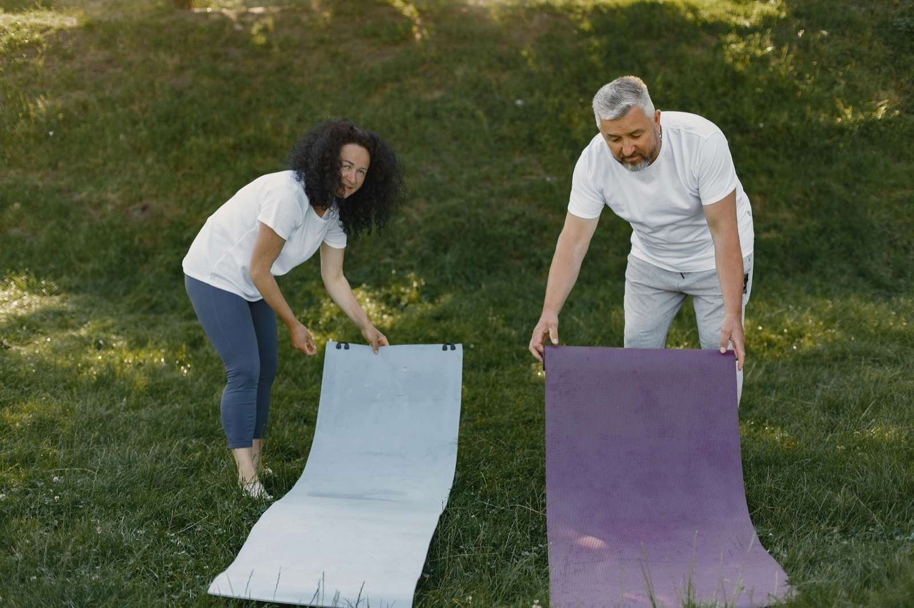

Préserver l'autonomie le plus longtemps possible
Travailler ce qui compte vraiment : se lever, marcher, se tourner, garder plus d'assurance dans les gestes du quotidien et éviter un repli progressif.
Pour les familles de résidents en EHPAD · Individuel, binôme ou petit groupe · Séance d’essai offerte
Vous cherchez plus qu'une simple visite ? J'interviens en EHPAD avec des séances d'activité physique adaptée pensées pour aider votre proche à préserver sa mobilité, son autonomie et son élan au quotidien.
C'est un accompagnement complémentaire à ce que propose déjà l'établissement : plus personnalisé, plus ciblé et construit autour des capacités, des envies et du rythme réel du résident.
Pourquoi les familles me contactent
Travailler ce qui compte vraiment : se lever, marcher, se tourner, garder plus d'assurance dans les gestes du quotidien et éviter un repli progressif.
Les séances apportent présence, attention et stimulation, mais avec un objectif clair : bouger, progresser, entretenir les capacités et redonner envie.
Quand c'est possible et autorisé, la famille peut recevoir des retours simples, ainsi que quelques photos ou vidéos montrant le proche en activité.
Un complément utile
Je n'interviens pas pour remplacer le travail de l'établissement, mais pour proposer à certains résidents un temps sur mesure, plus individualisé, qui peut faire une vraie différence sur la mobilité, la tonicité, l'équilibre et l'envie de faire.
Ce temps peut aussi faire du bien sur le plan relationnel, parce qu'il se passe quelque chose d'utile : on marche, on se redresse, on franchit, on apprend, on reprend confiance et on voit des progrès.
Ce que je peux mettre en place
Le format le plus personnalisé pour un proche qui a besoin d'être rassuré, relancé en douceur et suivi de près dans ses progrès.
Possible quand deux résidents se stimulent bien ensemble : couple vivant en EHPAD, binôme de résidents ou petit groupe compatible.
Marche, équilibre, marche nordique si c'est pertinent, franchissement d'obstacles, travail de la verticalisation, renforcement musculaire, coordination et déplacements utiles au quotidien.
Quand le cadre s'y prête et avec les accords nécessaires, je peux transmettre des retours concrets, des photos ou de courtes vidéos pour montrer votre proche en action.
Séance d'essai
Cette première rencontre permet d'observer son niveau du moment, ce qui l'intéresse, ce qui le freine et la forme d'accompagnement la plus pertinente.

L'approche APA
En établissement, il faut respecter la personne, son humeur du jour, sa fatigue, ses fragilités et son histoire. L'objectif n'est jamais de forcer, mais d'aider le résident à continuer d'utiliser ce qu'il peut encore mobiliser.
Mon rôle est de proposer des séances qui donnent envie d'essayer, de progresser et d'apprendre encore : se remettre debout plus facilement, marcher plus loin, sortir dans le jardin ou dans le village si c'est envisageable, garder de meilleurs appuis et retrouver un peu plus de tonus.

Comment cela se passe ?
Nous parlons de votre proche, de son caractère, de son niveau de mobilité, de ce que vous aimeriez préserver ou relancer et du cadre de l'EHPAD.
Je rencontre votre proche, j'observe sa manière de bouger, ce qui l'intéresse et la meilleure façon de créer une séance bien vécue.
Individuel, couple, binôme ou petit groupe : nous retenons le cadre le plus pertinent selon la personne, l'envie et l'organisation possible dans l'établissement.
Au fil des séances, je peux vous faire des retours concrets sur l'implication, les progrès observés et, si cela est autorisé, vous partager quelques images ou vidéos.
Questions fréquentes
Non. C'est un accompagnement complémentaire, plus individualisé, qui vient s'ajouter aux services déjà proposés par l'établissement sans les remplacer ni les minimiser.
Oui. Selon les profils, les séances peuvent être prévues en individuel, en couple, en binôme ou en petit groupe de deux à trois personnes.
Oui, justement. Le contenu est construit à partir de ce qu'il peut faire aujourd'hui, sans logique de performance, pour remettre du mouvement et de l'envie progressivement.
Oui, lorsque le résident, la famille et l'établissement sont d'accord. Cela permet de vous donner des nouvelles concrètes et de vous montrer votre proche en activité.
Le financement peut être pensé avec la famille ou directement à partir des ressources du résident selon la situation. Le premier échange sert aussi à voir ce qui est réaliste.
Qui suis-je ?
Je m'appelle Nicolas. Je suis titulaire d'une Licence d'enseignant en activité physique adaptée et santé et j'accompagne depuis près de 10 ans des personnes qui souhaitent bouger de façon contrôlée, progressive et sécurisante.
Mon approche reste simple : écouter, adapter chaque séance à la personne, coordonner quand c'est utile avec l'entourage et chercher des progrès concrets dans le quotidien.
Portrait de Nicolas
Contact
Si vous êtes un enfant, un conjoint ou un proche d'une personne en EHPAD, vous pouvez me contacter directement. Nous verrons ensemble si un accompagnement individuel, en binôme ou en petit groupe peut l'aider à garder plus d'autonomie et d'élan.
Je peux vous proposer un premier échange puis une séance d'essai offerte pour que vous puissiez vous projeter concrètement avant d'aller plus loin.
Accompagnements ciblés
Pour aller droit au sujet, vous pouvez aussi consulter ces pages centrées sur l'accompagnement à domicile, l'équilibre ou l'intervention en EHPAD.
Des séances individuelles au domicile pour travailler mobilité, équilibre et autonomie dans un cadre familier.
SécuritéUn accompagnement progressif pour sécuriser les déplacements, renforcer les appuis et reprendre confiance.
ÉtablissementDes séances adaptées aux résidents, en individuel ou en petit groupe, avec une approche douce et structurée.